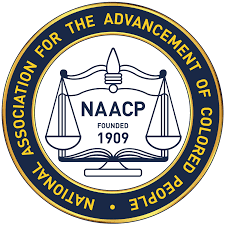
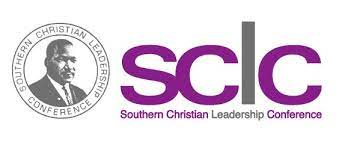
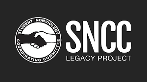

1.Ella Josephine Baker was born on December 13, 1903, in Norfolk, Virginia.
2.She had two sibling her older brother Blake Curtis and her younger sister Maggie.
3.Her father worked on a steamship line that sailed out of Norfolk and her mother worked as a boarder to earn extra money for the family.
4.In 1910, Norfolk had a race riot in which whites attacked black workers from the shipyard. Her mother decided to take the family back to North Carolina in Littleton.
5.When She was little she listened to her grandmother, Josephine Elizabeth "Bet" Ross ,and she would tell stories about her time in slavery and leaving the South to escape its oppressive society. Because of this Baker gained a sense of social injustice when she was little, as she listened to her grandmother's horror stories of life as an enslaved person she vowerd to change things in the world.
6.Baker studied at Shaw University in Raleigh, North Carolina. As a student she challenged school policies that she thought were unfair. After graduating in 1927 as class valedictorian, she moved to New York City and began joining social activist organizations.
_________________________________________________________________________________________________________________________________________________________________________
1.In 1930, she joined the Young Negroes Cooperative League, whose purpose was to develop black economic power through collective planning. She also involved herself with several women’s organizations.
2.Ella Baker began her involvement with the NAACP in 1940. She worked as a field secretary and then served as director of branches from 1943 until 1946.
3.In 1957, Ella Baker moved to Atlanta to help organize Martin Luther King’s new organization, the Southern Christian Leadership Conference (SCLC). She also ran a voter registration campaign called the Crusade for Citizenship.
4.Baker married T.J. Roberts in the late 1930s and then joined the staff of the National Association for the Advancement of Colored People (NAACP), first as a field secretary and later as national director of the NAACP’s various branches.
5.Unhappy with the bureaucratic nature of the NAACP and newly responsible for the care of her young niece, she resigned from her director position in 1946 but worked with the New York branch to integrate local schools and improve the quality of education for black children.
6.In 1994 she was put into the National Women’s Hall of Fame, and has ittle parts about her life in the website, this is the website https://www.womenofthehall.org/inductee/ella-baker/#:~:text=A%20major%20force%20in%20shaping,of%20the%20Student%20Non%2DViolent
7.Years after she died a center, and a website showed up in her honor and is fighting for what she fought in her life, this is the website https://ellabakercenter.org/
_________________________________________________________________________________________________________________________________________________________________________
1.Mrs.Baker was an adviser to the creation of the Mississippi Democratic Freedom Party (MDFP), created to help overturn the all-white Democratic Party delegation to the party conventions.
2.In 1938 Baker began her association with (NAACP). In December 1940 she started work there as a secretary. She traveled widely for the organization, especially in the South, recruiting members, raising money, and organizing local chapters. She was named director of branches in 1943, and became the NAACP's highest-ranking woman. An outspoken woman, Baker believed in egalitarian ideals. She pushed the NAACP to decentralize its leadership structure and to aid its membership in more activist campaigns at the local level
3.Baker's job with the SCLC was more frustrating than fruitful. She was unsettled politically, physically, and emotionally. She had no solid allies in the office. Yet she managed to do so much that she helped schools, people all the time while not feeling welcomed there.
4.Baker worked closely with southern civil rights activists in Georgia, Alabama, and Mississippi, and gained respect for her organizing abilities. She helped initiate voter registration campaigns and identify other local grievances. Their strategy included education, sermons in churches, and efforts to establish grassroots centers to stress the importance of the vote. They also planned to rely on the Civil Rights Act of 1957 to protect local voters.
_________________________________________________________________________________________________________________________________________________________________________
https://en.wikipedia.org/wiki/Ella_Baker
https://ellabakercenter.org/who-was-ella-baker/
https://www.britannica.com/biography/Ella-Baker
https://www.legacy.com/news/ella-baker-10-facts/
https://www.womenofthehall.org/inductee/ella-baker/#:~:text=A%20major%20force%20in%20shaping,of%20the%20Student%20Non%2DViolent
_________________________________________________________________________________________________________________________________________________________________________